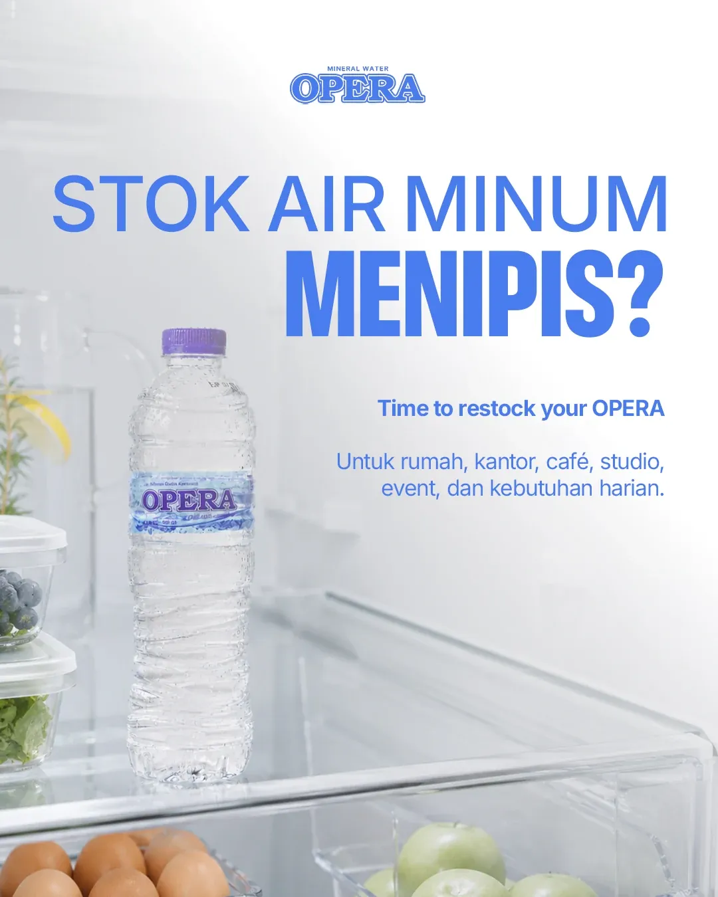
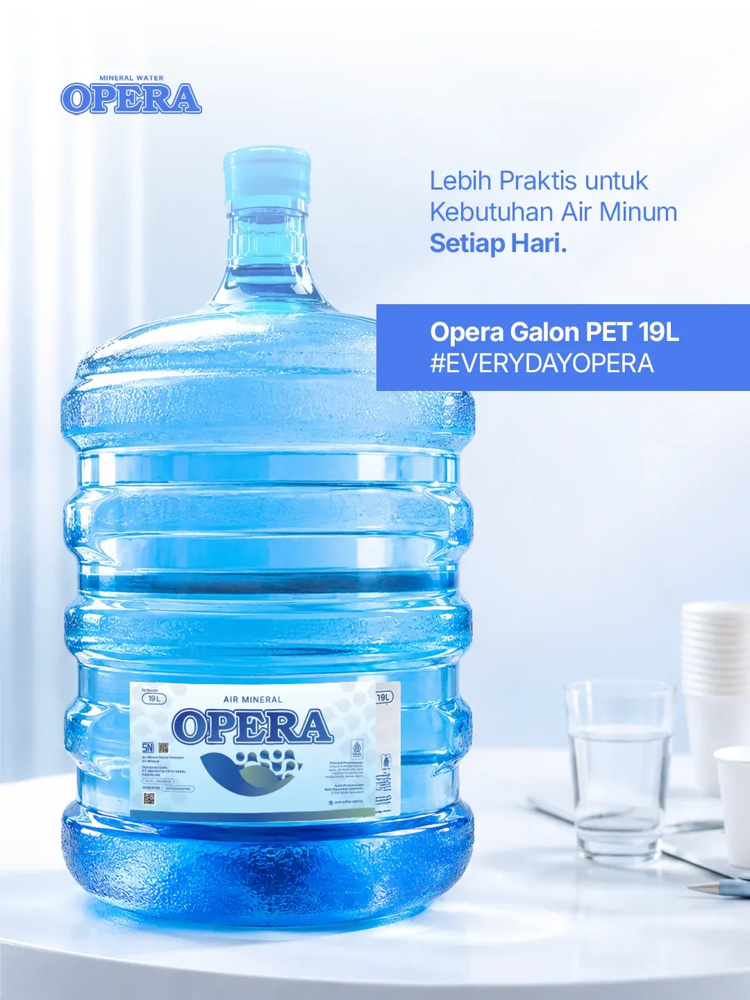
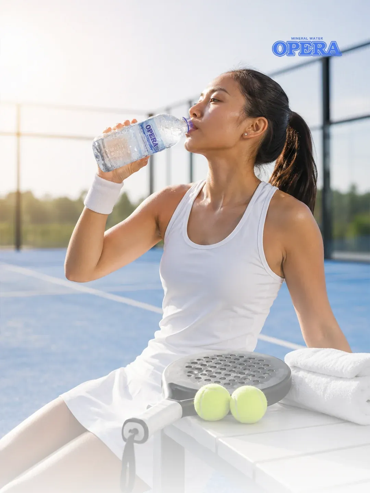
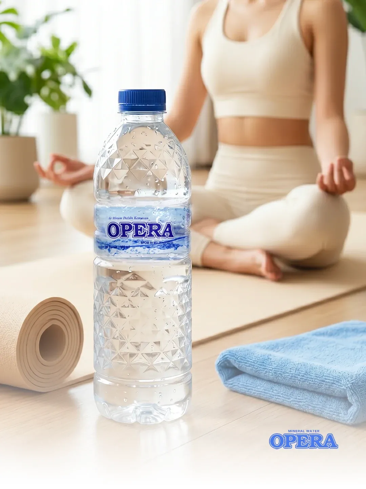
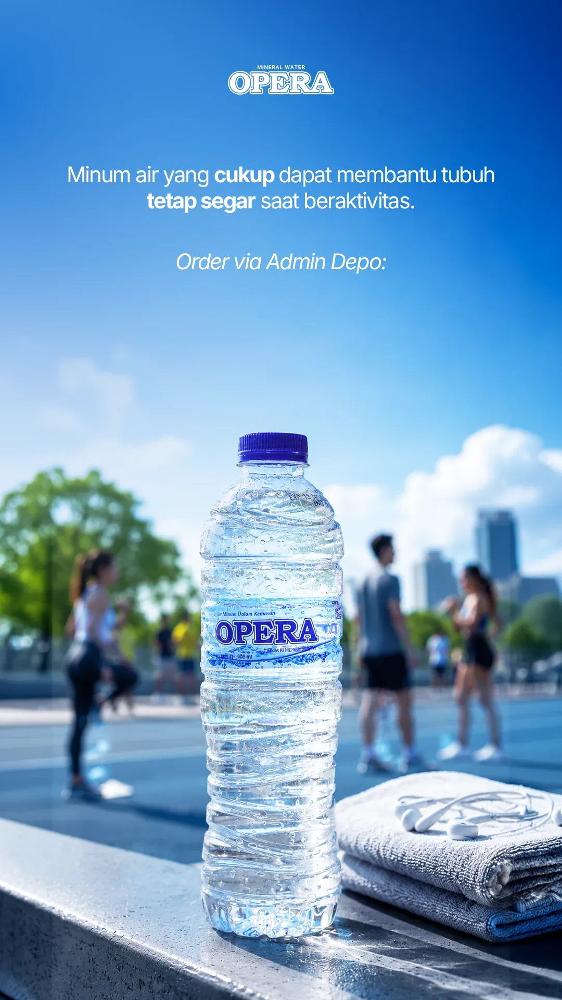
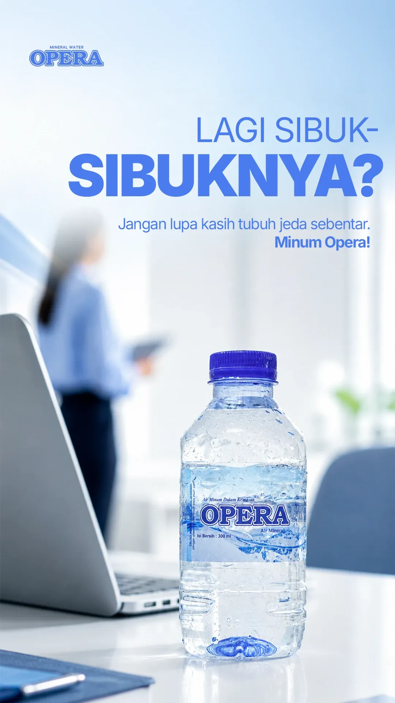
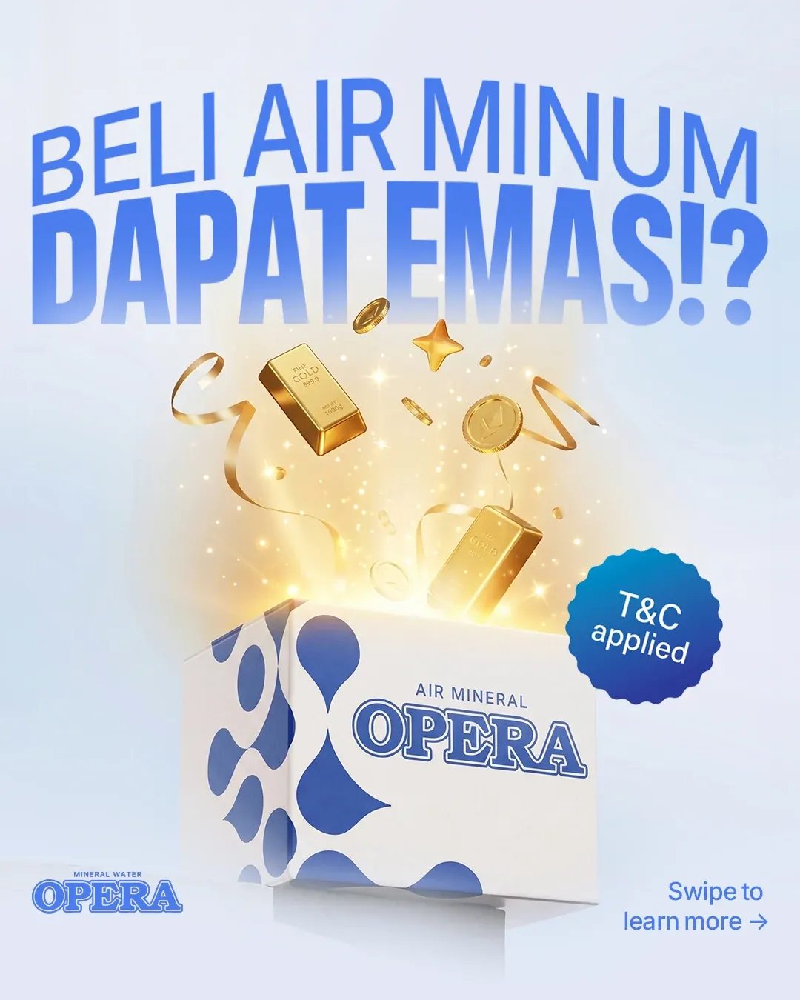
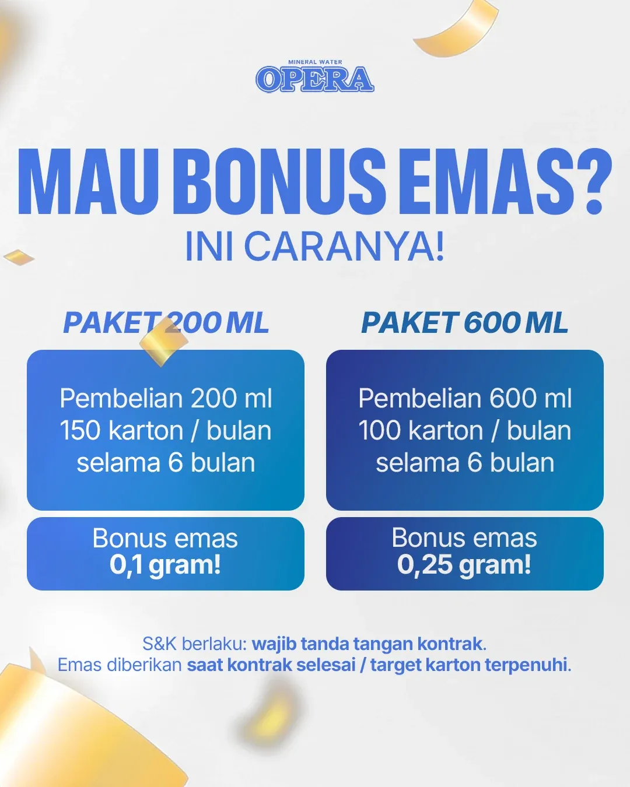

Context
Opera speaks across home, office, fitness, product education, and promotion. The challenge was to keep every message fresh without letting the brand feel fragmented.
Brand communication · Mineral water
A clean, flexible content system that makes every product, moment, and campaign feel part of one brand.

Project overview
Opera speaks across home, office, fitness, product education, and promotion. The challenge was to keep every message fresh without letting the brand feel fragmented.
Soft gradients, bright white space, bold blue typography, and product-led compositions create a system that feels light, clear, and unmistakably Opera.
02 / Product communication
A restrained two-column composition keeps product information easy to compare while preserving each artwork at its intended ratio.

03 / Lifestyle direction
Two image-led applications show how the same visual language moves naturally between active and wellness settings.


04 / Story formats
Vertical work is presented in a dedicated story stage rather than stretched into a desktop card, keeping the original 9:16 composition intact.


05 / Promotional campaign
The campaign is shown as a complete three-part narrative—teaser, information, and action—so the work reads as a system rather than isolated posts.


06 / Outcome
The result is a clearer brand presence across product, lifestyle, and promotional content—and a system that makes future work faster and more consistent.